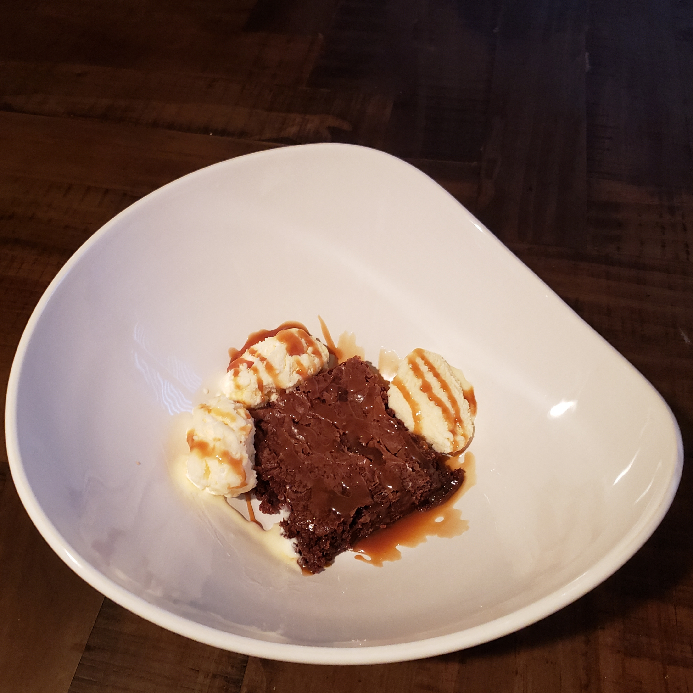

Fudge Brownies

Ingredients
- One box Betty Crocker Fudge Brownie Mix
- 1/4 Cup Water
- 1/3 Cup Vegetable Oil
- 2 Eggs
- Toppings of Choice
- vanilla ice cream
- caramel sauce
Directions
- In a large mixing bowl, combine brownie mix, water, vegetable oil, and eggs
- Mix until well blended and there are no lumps of dry ingredients
- Pour mixture evenly into a baking pan. I use a glass one because it works best
- Bake at 350o for 27 minutes, or until they smell done and a toothpick comes out clean
Ideas for Brownie Toppings
Contact Me
Anika Wutke
Email Me
The University of Montana
32 Campus Dr
Missoula, MT 59812